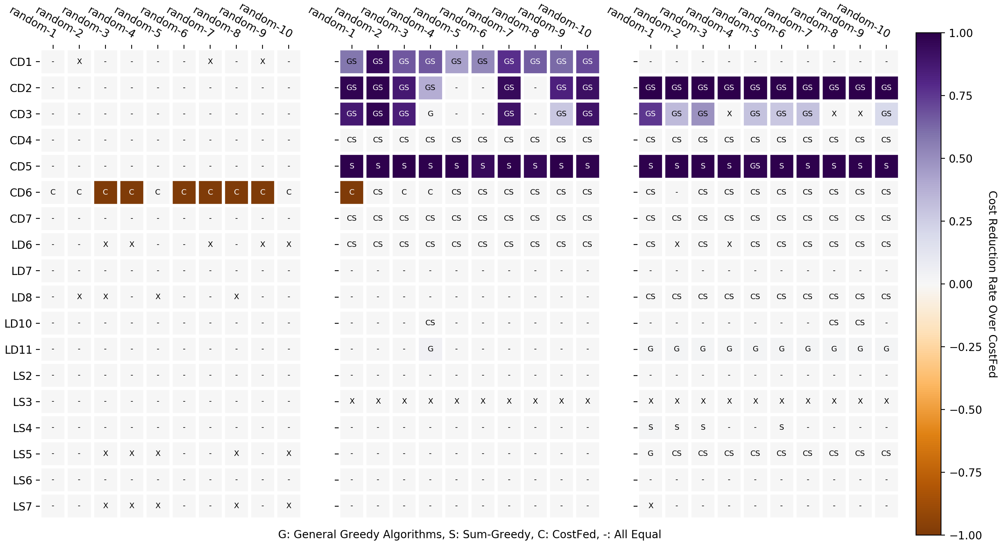

heatmap: to show data which depends on two independent variables as a color coded image plot with or without categories.

import numpy as np
import matplotlib.pyplot as plt
import matplotlib
from pylab import *
from operator import add
import os
def heatmap_no_bar(data, row_labels, col_labels, ax=None,
cbar_kw={}, cbarlabel="", **kwargs):
if not ax:
ax = plt.gca()
# Plot the heatmap
im = ax.imshow(data, **kwargs)
# We want to show all ticks...
ax.set_xticks(np.arange(data.shape[1]))
ax.set_yticks(np.arange(data.shape[0]))
# ... and label them with the respective list entries.
ax.set_xticklabels(col_labels)
ax.set_yticklabels(row_labels)
# Let the horizontal axes labeling appear on top.
ax.tick_params(top=True, bottom=False,
labeltop=True, labelbottom=False)
# Rotate the tick labels and set their alignment.
plt.setp(ax.get_xticklabels(), rotation=-30, ha="right",
rotation_mode="anchor")
# Turn spines off and create white grid.
for edge, spine in ax.spines.items():
spine.set_visible(False)
ax.set_xticks(np.arange(data.shape[1]+1)-.5, minor=True)
ax.set_yticks(np.arange(data.shape[0]+1)-.5, minor=True)
ax.grid(which="minor", color="w", linestyle='-', linewidth=3)
ax.tick_params(which="minor", bottom=False, left=False)
return im
def annotate_heatmap(im, data=None, valfmt="{x:.2f}",
textcolors=["black", "white"],
threshold=None, **textkw):
if not isinstance(data, (list, np.ndarray)):
data = im.get_array()
# Normalize the threshold to the images color range.
if threshold is not None:
threshold = im.norm(threshold)
else:
threshold = im.norm(data.max())/2.
# Set default alignment to center, but allow it to be
# overwritten by textkw.
kw = dict(horizontalalignment="center",
verticalalignment="center")
kw.update(textkw)
# Loop over the data and create a `Text` for each "pixel".
# Change the text's color depending on the data.
texts = []
for i in range(data.shape[0]):
for j in range(data.shape[1]):
if im.norm(data[i, j]) > 0.79:
kw.update(color="white")
else:
kw.update(color=textcolors[int(im.norm(data[i, j]) > threshold)])
text = im.axes.text(j, i, valfmt[i][j], **kw)
texts.append(text)
return texts
# fold into one figure
fig, (ax1, ax2, ax3) = plt.subplots(1, 3, figsize=(14, 7), gridspec_kw={'width_ratios': [4, 4, 5]})
data = np.array(data_matrix)
label = np.array(markers_matrix)
im = heatmap_no_bar(data, y_label, x_label, ax=ax1, cmap="PuOr", vmin=-1, vmax=1)
annotate_heatmap(im, valfmt=label, threshold=-1,
textcolors=["white", "black"], size=7)
data = np.array(freemium_result_matrix)
label = np.array(freemium_result_matrix_markers)
im = heatmap_no_bar(data, y_label, x_label, ax=ax2, cmap="PuOr", vmin=-1, vmax=1)
annotate_heatmap(im, valfmt=label, threshold=-1,
textcolors=["white", "black"], size=7)
data = np.array(per_result_matrix)
label = np.array(per_result_matrix_markers)
im, _ = heatmap(data, y_label, x_label, ax=ax3, cmap="PuOr", vmin=-1, vmax=1,
cbarlabel="Cost Reduction Rate Over CostFed")
annotate_heatmap(im, valfmt=label, threshold=-1,
textcolors=["white", "black"], size=7)
plt.subplots_adjust(left=0.04, bottom=0.02, right=0.965, top=0.94, wspace=0.13)
plt.setp([ax2], xlabel='G: General Greedy Algorithms, S: Sum-Greedy, C: CostFed, -: All Equal')
plt.show()